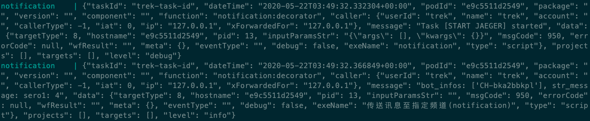

Environment Variables for Debugging¶
環境變數 |
設定值 |
描述 |
|---|---|---|
normal / table |
設定 log 印出來的樣式，有 normal, table 兩種 |
|
數字，如：100 |
設定 log 表格寬度 |
|
data,taskId, ... |
設定要印的 log 欄位，以逗號分隔 |
|
|
設定 normal 模式下要顯示的 log 樣式 |
|
1 (有此變數就生效) |
印出一些 request 相關資訊 |
BLCKS_DEBUG_LOG_MODE¶
有 normal / table 兩種可以設定，當沒設定時印出的 log 為 json format。
normal 為單行模式，可以透過 BLCKS_DEBUG_LOG_FORMAT 來設定樣式
table 為表格模式，將原本 json 格式依照欄位用表格印出，其中 message 欄位一定會印
BLCKS_DEBUG_LOG_TABLE_WIDTH¶
BLCKS_DEBUG_LOG_MODE 為 table 時，可設定 log 表格寬度，預設為 100
BLCKS_DEBUG_LOG_FIELDS¶
設定要印的 log 欄位，以逗號分隔，設定範例：
{
// ...
"envs": {
"BLCKS_DEBUG_LOG_FIELDS": "data,taskId",
// ...
}
}
table 模式下影響的為顯示的 row
normal 模式下影響的為 BLCKS_DEBUG_LOG_FORMAT 可使用的 key
BLCKS_DEBUG_LOG_FORMAT¶
設定 normal 模式下要顯示的 log 樣式，以 Coordinates: {latitude}, {longitude} 這樣的形式設定
{
// ...
"envs": {
"BLCKS_DEBUG_LOG_FORMAT": "{message} => data: {data[inputParamsStr]}, taskId: {taskId}",
// ...
}
}
// 輸出的 log 會為
// bot_infos: ['CH-bka2bbkpl'], str_message: sero1: 4 => data: , taskId: trek-task-id
SHOW_DEBUG_LOGS¶
有設定此變數則生效，一般會直接設為 1
{
// ...
"envs": {
"SHOW_DEBUG_LOGS": 1,
// ...
}
}
印出一些 request 相關資訊，目前包含的有：
收到的 event 內容
送出的 request 資訊
收到的 response 資訊